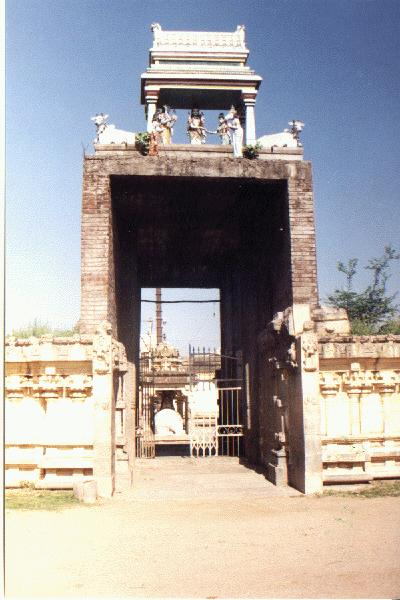

āmāttūr
- Identifier: NA21
- Modern Name (NIC):
- Modern Name (M.I.): tiruvāmāttūr
- Modern Name (Govt Press): tiruvāmāttūr
- Modern Name: tiru āmāttūr
- Modern District & Taluk: viḻuppuram DT (viḻuppuram TK)
- Old administrative location: South Arcot DT (Villupuram TK)
- Nearby town: Viḻuppuram
- Railway station: Viḻuppuram cantippu (NW: 5km)
- Longit. 79 deg. 28'; Latit. 11 deg. 58' [NA21]
- C.D.Maclean-3: entry: VILLOOPOORAM, p. 983, col. 2,
[Trivamauttore [tiruvāmāttūr], lat. 11deg. 58', long. 79deg. 31']
- Location: according to PK: Naṭu Nāṭu (NA21)
- Name inside hymns:
- Name inside PK: tiru āmāttūr
- Rank inside third volume of PIFI: 22
- Rank inside Civastala Mañcari: 22
- Rank on PY576 map: 55
- Total number of patikam-s: 5
- Campantar: 2 patikam
- Appar: 2 patikam
- Cuntarar: 1 patikam
8 pictures taken on 1998 August 4th (Tuesday, 9 a.m.)




- Patikam 2_44
- Patikam 2_50
- Patikam 5_44
- Patikam 6_9
- Patikam 7_45